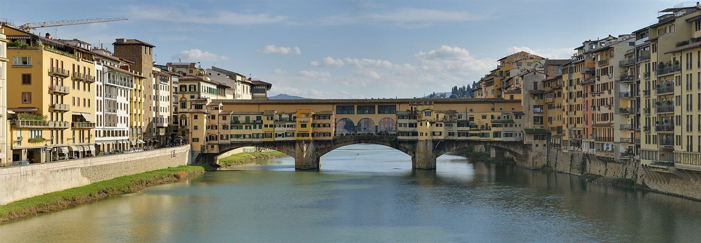

Sobre nosotras
La curiosidad también
es un punto de partida.
Dos autoras y un proyecto para acercarnos al mundo a través de sus lugares, sus culturas y sus sabores.
Valentina Gonzalez & Guillermina Valiante
Una bitácora para compartir ideas.
Bitácora Viajera nació como un trabajo práctico académico de 2026. La idea es reunir información sobre Francia, Italia y Brasil en un sitio sencillo de recorrer y agradable de leer.
Organizamos cada guía en tres partes: lugares para conocer, dónde hospedarse y gastronomía. Queremos que encuentres un punto de partida para investigar y pensar tu propio viaje.
Este blog es un ejercicio de investigación y diseño web. Sus contenidos no son relatos de visitas realizadas por las autoras ni recomendaciones comprobadas en persona.
Empezá por los destinos ↗
PREGUNTAS FRECUENTES
Algunas respuestas
¿De qué trata nuestro blog?
Es un blog de viajes con información sobre Francia, Italia y Brasil.
¿Qué información podemos encontrar?
Recomendaciones de lugares para visitar, opciones de hospedaje y comidas tradicionales.
¿Por qué elegimos estos destinos?
Porque nos interesa conocer sus paisajes, su historia y sus diferentes culturas.
¿Podemos sugerir otros destinos?
Podés explorar el formulario de contacto como demostración. Por ahora no recibimos ni almacenamos mensajes desde el sitio.